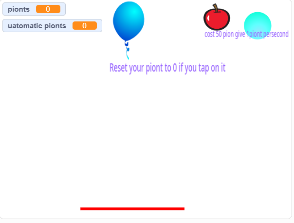
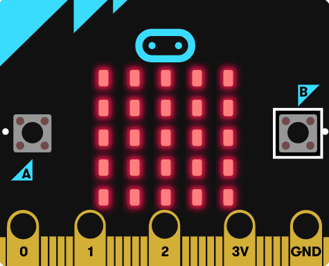
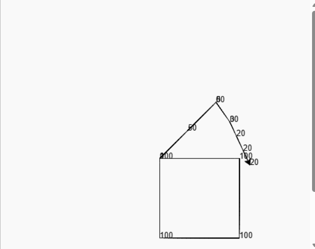
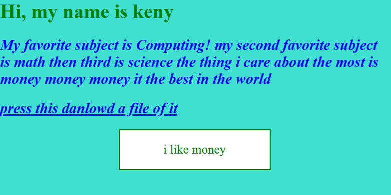
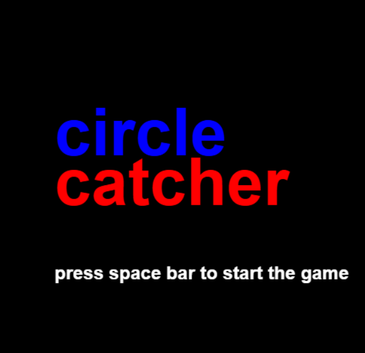
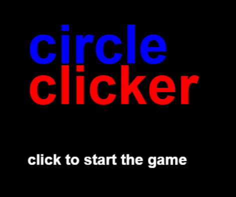
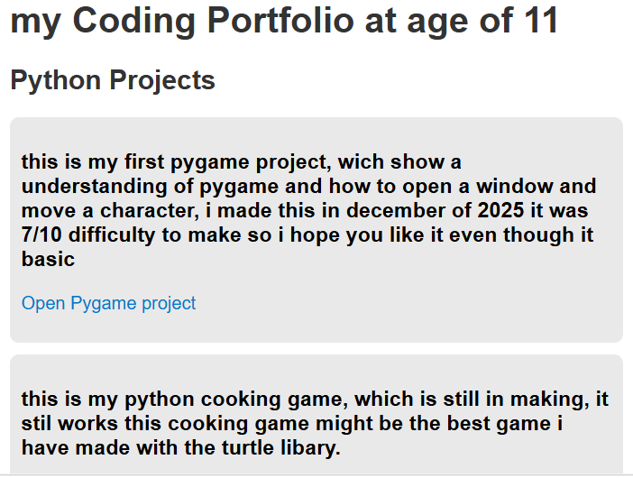

I started programming at age 8, even though I like to say age 7 since I was introduced to Scratch at 7. But I didn’t really code at that time. My sister was doing Scratch in her class and she told me, “Oh Keny, we were doing Scratch in class,” and then she showed me the website called Scratch. This ignited my coding passion because I could create whatever I wanted. I remember being on my Windows 7 laptop, watching the Scratch tutorial, and being so fascinated by what I created.

I was still using Scratch, but I wanted to experiment and try something new. That’s when I found MakeCode Microbit and MakeCode Arcade. The Microbit version is more for engineering, and the Arcade version is for games. MakeCode Arcade really got me into game development. I even made a Pokémon game in MakeCode Arcade, but unfortunately I can’t find it anymore.I still was coding in scracth so i did not just leave scracth entirally

This is when I started coding in Python. I knew Python existed because of MakeCode Arcade, but instead of coding Python games in Arcade, I moved to Python on Trinket. I learned a little bit about Python Turtle. i also started html and css

this was when i gotinto html and css i wanted to make my own website and publish my python games on the web so that the reason i lerned html i was not really good at html and css since i could only do h1 tags and a little bit of css

This is when I was learning event‑driven programming. I became really good at Python Turtle, and now I am moving on to Pygame.


this was when i got good at html and css and i reached this skill level i started to share my python games like this i soon will learn javascript to make my websites better
